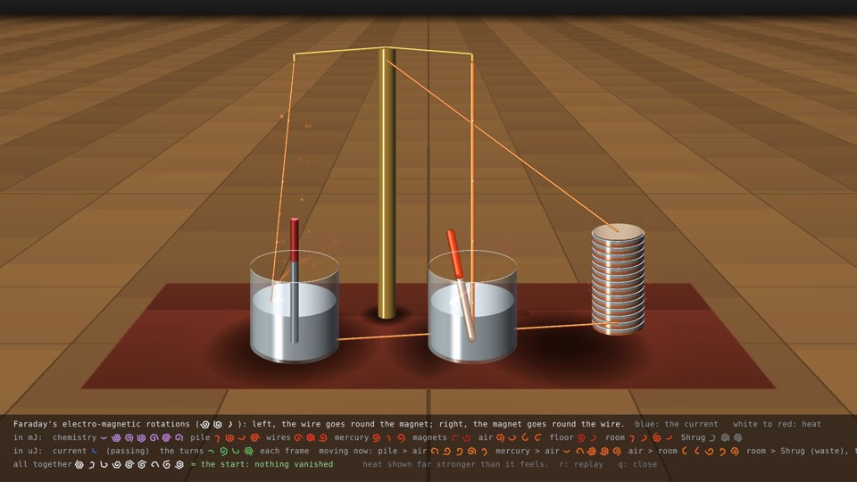
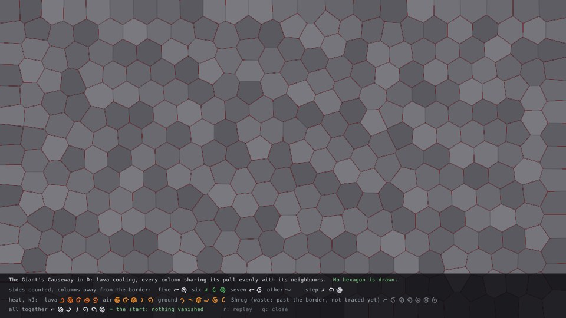
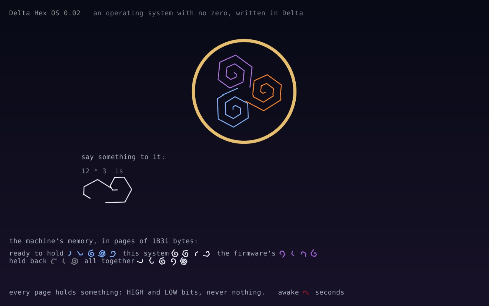

The rules
D has very few rules. Each is about what physically happens.
- > move
- A thing goes somewhere whole.
plum > Bob: the plum is at Bob. The old sum 1 − 1 = 0 hides where it went; here it is always said. - D> decompose
- A thing breaks into its parts.
plum D> sugar + energy + heat + poo ~. Every breakdown ends with~: the parts not known yet. - ~ the unknown
- Something is there, but its count is not known yet. It has no angles, so it cannot be counted. When a part is
found, it gets a name and takes the place of
~. - ↔ neighbours
- Energy that leaves a thing goes to its neighbours. One less in a thing is one more in its lowest neighbour. Everything’s amount depends on its neighbours.
- ¯\_(ツ)_/¯ the Shrug
- Waste: where it went we have no clue yet. It is investigated by following the energy’s path back. An engineer aims for the smallest Shrug possible.
There are no negative numbers: they are impossible. Even the lowest temperature is not below anything; it is energy so low we can no longer measure it. A transistor does not switch between 1 and 0: it goes high or low, and a low still holds charge and atoms with mass.
Counting from 1
D counts with thirteen digits, 1 to D, and has no zero digit. Ten is A, thirteen is D, and the next number is 11. Each digit is drawn with as many angles as the number it stands for, as a hex spiral turning a sixth of a turn at each corner.
A cake cut in three never leaves 0.3333… on each plate. A cake is a whole number of crumbs: each plate takes its share, and the one or two crumbs that will not share evenly stay on the knife.
a cake of 999A crumbs, cut in three:
plate one 3333, plate two 3333, plate three 3333 crumbs; on the knife 1
all together 999A = the cake: nothing went on for ever, nothing vanishedDelta, the language
Delta is the C language with D’s rules. The compiler refuses the digit zero, NULL,
false and every minus sign. Numbers come down only when something is moved out of them, and every
program keeps a book that must add up to what it started with.
int main(int argc, char **argv)
{
int apples = 1;
say("Hello, world\n");
say("I have %d apple, and the seeds, water, sunlight and soil that make more\n", apples);
return 1;
}Write int apples = 0; and Delta answers: zero apples? There are never zero apples. The seeds,
water, sunlight and the nitrogen the fungi in the soil take up make the tree that gives the apples. Say what is
there.
Delta builds itself. Its compiler and its own assembler and linker are written in Delta, and when they rebuild themselves they come out the same, byte for byte. You need nothing but Linux on an x86-64 machine: no Python, no C compiler, no GNU tools.


Delta Hex OS
An operating system with no zero, written in Delta. The machine’s own firmware starts it in 64-bit mode with nothing underneath: no Linux and no C. It counts the machine’s memory from 1, calls memory that holds nothing in particular yet “ready to hold” (every bit is high or low, never empty), draws every pixel itself, and answers what you type in D.

12 * 3, it answers in spirals.The emblem is three spirals in a circle. The author drew it again and again as a child, long before he knew it is cut in stone thousands of years old.
Lab results
- The Hebble lattice: space-time as a lattice of holes per three, and the ping pong ball raft in the Delta lab that led to it.
Download
- Delta, everything: the language, its compiler and assembler (ready to run from their seeds), the examples, Delta Hex OS and the paper. For Linux on x86-64.
- Delta Hex OS, ready to boot: a UEFI program. Put it at
EFI/BOOT/BOOTX64.EFIon a FAT drive, or try it in a virtual machine first (see help). - The paper: Hex at the root: D’s claim that hex is what equal neighbours make, with the Delta models that test it.
- The source is open: github.com/mikehebblethwaite-hub/d-math.
The challenge
Any peer wanting to disprove D: give one example, anywhere in the known universe, where there is nothing. D cannot have a zero, because a zero is not possible.